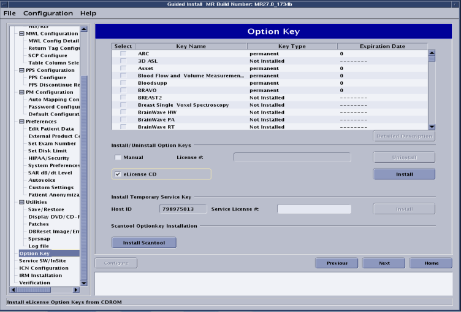

Installing from an eLicense CD/DVD
All of the eLicense option keys can also be saved onto one CD/DVD. This is the preferred method for installing option keys. Once you create the CD/DVD, the options can be loaded onto the system.
Procedure
- Start the disc burning software.Visit the GE MyTech webpage to obtain a licensed copy of a disc burning software application or call the GE Healthcare help desk.
- Create a new project or session and select the data disc option (or equivalent).
- Add the license.sh file to the disc project or session.
- Put a blank CD/DVD in the computer's CD/DVD drive and initiate the burning session.
- After the disc burn has completed successfully, insert the CD/DVD into the host computer CD/DVD drive.
- Select the Service Tools Desktop.
- From the Service Desktop Manager, select Guided Install and select Start… to open Guided Install.
- When a command window displays the message Type Root Password, type the system's root password: operator (default), and press Enter.note: It is possible that the customer changed the default password. If you cannot log in, contact the customer for the correct password.
- Once the Guided Install window opens, select the Option Key tab.
- Select the eLicense CD checkbox on the Install Option Key section of the window, and then click Install.
Figure 1. Option key interface

- When the keys are finished loading, a pop-up dialogue displays the list of the installed options.
- Verify the option list in the Guided Install window is updated with the options just loaded.
- Select to exit the Guided Install tool.
- Reboot the computer and verify that all options are available.
- Complete a SaveInfo to retain all newly installed options on an Info MOD.